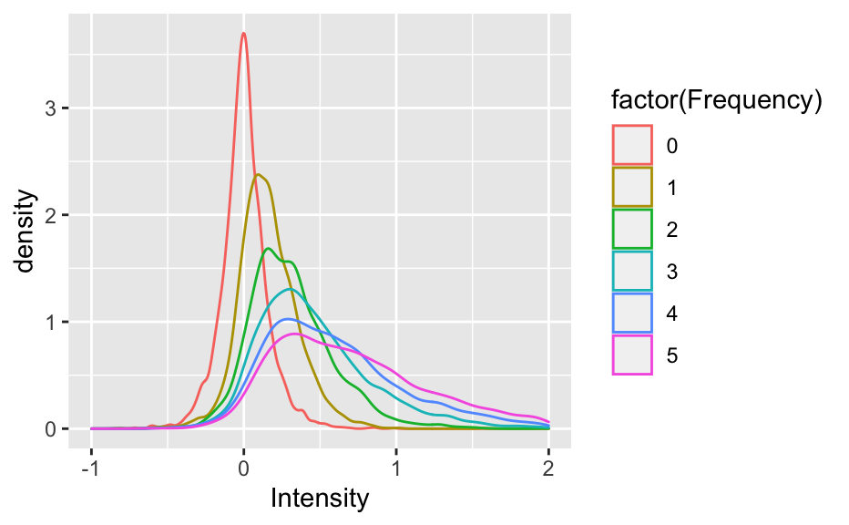

Moving on to Hintzman (1988)
── Attaching packages ─────────────────────────────────────── tidyverse 1.3.1 ──
✔ ggplot2 3.3.6 ✔ purrr 0.3.4
✔ tibble 3.1.7 ✔ dplyr 1.0.9
✔ tidyr 1.2.0 ✔ stringr 1.4.0
✔ readr 2.1.2 ✔ forcats 0.5.1
── Conflicts ────────────────────────────────────────── tidyverse_conflicts() ──
✖ dplyr::filter() masks stats::filter()
✖ dplyr::lag() masks stats::lag()
set.seed (30 )# Activation function (borrowed from Matt) for a single probe (i.e. a probe vector) <- function (probe, mem) {as.numeric (((probe %*% t (mem)) / rowSums (t ((probe == 0 ) * t (mem == 0 )) == 0 ))^ 3 )# Item generation function (borrowed from Matt) <- function (item_size= 20 ,prob= c (1 / 3 ,1 / 3 ,1 / 3 )){<- sample (c (1 ,0 ,- 1 ),size = item_size,replace = TRUE ,prob = prob)return (item)# Item matrix (original, before applying learning rate) function <- function (matrix_size = 20 , item_size = 20 , prob = c (1 / 3 , 1 / 3 , 1 / 3 )) {<- t (replicate (n = matrix_size, generate_item (item_size = item_size, prob = prob)))return (item_matrix)# Form probe matrix i.e. item_matrix + 4 more random items <- function (item_matrix, prob = c (1 / 3 , 1 / 3 , 1 / 3 ), max_num_of_copies = 5 , num_of_traces_per_freq = 4 ) {<- t (replicate (n = num_of_traces_per_freq, generate_item (item_size = ncol (item_matrix), prob = prob)))<- rbind (random_items, item_matrix)return (probe_matrix)# Form secondary memory -- create encoded matrix (i.e. apply learning rate) and input varying frequencies of items <- function (item_matrix, l_value = .5 , max_num_of_copies = 5 , num_of_traces_per_freq = 4 ) {<- c ()for (i in 1 : max_num_of_copies) {<- rep (i, num_of_traces_per_freq)<- c (freq_multiplier, current_multiplier)<- c ()for (j in 1 : length (freq_multiplier)) {<- matrix (rep (item_matrix[j, ], freq_multiplier[j]), nrow = freq_multiplier[j], ncol = ncol (item_matrix), byrow = TRUE )<- rbind (secondary_memory, current_rows)<- t (replicate (n = nrow (secondary_memory), sample (c (0 ,1 ), size = ncol (secondary_memory), prob = c (1 - l_value, l_value), replace = TRUE )))<- secondary_memory * learning_matrixreturn (encoded_memory)# Calculate activations for multiple probes <- function (probe_matrix, secondary_memory) {<- c ()for (i in 1 : nrow (probe_matrix)) {<- get_activations_3 (probe_matrix[i, ], secondary_memory)<- rbind (activations_matrix, current_activs)return (activations_matrix)# Convert activations matrix to transformed intensity matrix ready for plotting <- function (activations_matrix, max_num_of_copies = 5 , num_of_traces_per_freq = 4 ) {<- rowSums (activations_matrix)<- matrix (intensity_vector, nrow = max_num_of_copies + 1 , ncol = num_of_traces_per_freq, byrow = TRUE )return (intensity_matrix)
# Overall simulation function <- function (matrix_size = 20 , item_size = 20 , prob = c (1 / 3 , 1 / 3 , 1 / 3 ), l_value = .5 , max_num_of_copies = 5 , num_of_traces_per_freq = 4 ) {<- gen_item_matrix (matrix_size = matrix_size, item_size = item_size, prob = prob)<- gen_probes (item_matrix, prob = prob, max_num_of_copies = max_num_of_copies, num_of_traces_per_freq = num_of_traces_per_freq)<- gen_secondary_mem (item_matrix, l_value = l_value, max_num_of_copies = max_num_of_copies, num_of_traces_per_freq = num_of_traces_per_freq)<- calc_activs_for_mult_probes (probe_matrix, secondary_memory)<- convert_to_intensity_mat (activations_matrix, max_num_of_copies = max_num_of_copies, num_of_traces_per_freq = num_of_traces_per_freq)return (intensity_matrix)<- function (n_of_sim, matrix_size = 20 , item_size = 20 , prob = c (1 / 3 , 1 / 3 , 1 / 3 ), l_value = .5 , max_num_of_copies = 5 , num_of_traces_per_freq = 4 ) {<- c ()for (i in 1 : n_of_sim) {<- sim_intensity_once (matrix_size = matrix_size, item_size = item_size, prob = prob, l_value = l_value, max_num_of_copies = max_num_of_copies, num_of_traces_per_freq = num_of_traces_per_freq)<- cbind (raw_intensity_matrix, temp_intensity)<- as.data.frame (0 : max_num_of_copies)names (row_names) <- "Frequency" <- bind_cols (row_names, data.frame (raw_intensity_matrix)) %>% pivot_longer (! Frequency, names_to = "Drop" , values_to = "Intensity" ) %>% select ("Frequency" , "Intensity" )return (intensity_df)
<- sim_intensity_multiple (1000 )ggplot (df_intensity, aes (x = Intensity, color = factor (Frequency))) + geom_density (show.legend = TRUE ) + xlim (- 1 , 2 )
Warning: Removed 4 rows containing non-finite values (stat_density).
Finally, I managed to reproduce the graph. I had gotten the general shape earlier (see below) but the mean values were too small and the graphs weren’t spread out enough. It turns out that I was misunderstanding the L value. The L value affects sampling rate (i.e. how many features are selected to be copied versus nullified), not trace quality (i.e. the actual number of features in memory that are different from others). Thus, I had assumed that all copies of the same original item in secondary memory would i) have the same same number of features learnt, ii) have the exact same features. I was wrong on both counts.
I fixed this by creating the copies first before applying the learning rate, instead of the other way around. This way, the learning rate applies noise, so even among copies of the same item, there is variation in the number of features changes. This is due to the fact that, for some traces, feature values that were originally 0 may be selected to be nullified (resulting in essentially no change), whereas for other traces, feature values that were originally 1 or -1 may be selected to be nullified (resulting in a meaningful change).
